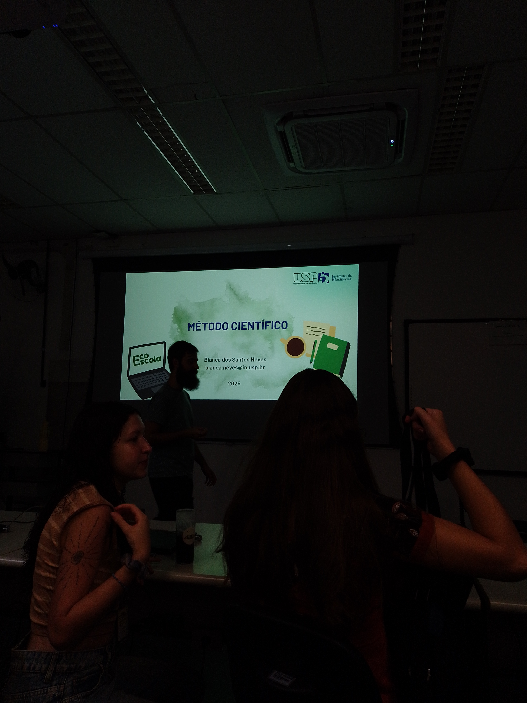

2 Introdução
Este livro contém os resumos dos trabalhos realizados durante a 6ª EcoEscola. Esta é a primeira iniciativa de organização dos resumos. Pretendemos que este material sirva de duas formas. Para apresentar os projetos realizados durante o módulo prático da EcoEscola, e que sirva como fonte de inspiração para projetos rápidos (duas semanas) que envolvam coleta, análise e interpretação de dados. Pretendemos que este material também sirva para professores e educadores de ensino superior e médio para fornecer possíveis atividades práticas que possam ser utilizadas em aulas de ensino de Ecologia para nível médio e superior.
2.1 A EcoEscola
A Escola de Ecologia da USP (EcoEscola) é um curso teórico-prático de pesquisa em Ecologia, que abrange tópicos de ecologia geral e fundamentação da metodologia científica, sendo um evento totalmente organizado majoritariamente pelos alunos do Programa de Pós-Graduação em Ecologia da Universidade de São Paulo (PPGE-USP).
2.2 Por que a EcoEscola não é só mais um curso teórico-prático em ecologia
Mais um curso de Ecologia? Os cursos que aliam teoria e prática em ecologia são comuns atualmente. A EcoEscola também visa oferecer tanto ensino quanto uma experiência de prática em pesquisa, porém, o diferencial é que o foco da EcoEscola não está apenas na formação de estudantes.
Desde o seu princípio a EcoEscola visa, além da formação de estudantes em estágios finais da graduação, a complementação da formação para professores de biologia da rede pública. Outro diferencial da EcoEscola é a possibilidade para que pós-graduandos possam adquirir experiência didática ao ministrar aulas. Para tanto, neste ano foi oferecido um workshop para introdução ao método de ensino por investigação, ministrado pela professora (Daniela Lopes Scarpa)[], proporcionando aos professores ministrantes uma base conceitual e prática para a elaboração de aulas que vão além da simples exposição de conteúdos e temas para os estudantes. As aulas são preparadas seguindo o método de ensino por investigação e a comissão organizadora participa ativamente na elaboração do plano de aula juntamente com os professores.
2.3 Modulo teórico - ensino por investigação
O curso é dividido em dois módulos, teórico e prático. O primeiro módulo é composto por aulas práticas e expositivas, baseadas no método de ensino por investigação e aprendizagem ativa, com duração de 5 dias. As aulas são ministradas majoritariamente por estudantes e pós-doutorandos do PPG em Ecologia do IB-USP, abrangendo temas de ecologia de populações, comunidades, paisagem, ecologia comportamental, evolução e princípios de conservação. Ainda há uma palestra e um momento para apresentação das linhas de pesquisa do programa de pós-graduação em Ecologia da USP.

2.4 Módulo 2 - Prática em ecologia
O segundo módulo mescla uma semana de aulas com aprendizagem ativa. As aulas abrangem uma introdução ao método científico, com tópicos em ecologia como ciência, ferramentas de pesquisa bibliográfica, delineamento experimental e análise estatística. Após as aulas os estudantes tem duas semanas de atividades práticas dentro da universidade, buscando ensinar e aplicar os conceitos aprendidos através do desenvolvimento de um projeto de pesquisa em ecológica. Este projeto envolve todas as fases de uma pesquisa científica, desde o delineamento amostral, a coleta, análise de dados e apresentação dos resultados.
